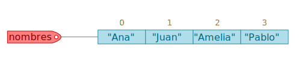

5. Estructuras de datos¶
5.1. Listas¶
Las listas son estructuras de datos que pueden almacenar cualquier otro tipo de dato, inclusive una lista puede contener otra lista, además, la cantidad de elementos de una lista se puede modificar removiendo o añadiendo elementos. Para definir una lista se utilizan los corchetes, dentro de estos se colocan todos los elementos separados por comas:
nombres = ["Ana","Juan","Sofía","Pablo","Tania"]
print(type(nombres))
<class 'list'>
Recordar que podemos crear listas con diferentes tipos de datos, por ejemplo, la siguiente lista contiene tres objetos: uno de tipo string, un entero y un booleano.
varios = ["Hola", 200, True]
print(type(varios))
<class 'list'>
La cantidad de elementos que conforman una lista se puede determinar utilizando la función len:
puntuaciones = [10, 8, 9, 9.5, 7]
len(puntuaciones)
5
5.1.1. Accediendo a los elementos de una lista¶
Las listas son secuencias y por lo tanto se puede acceder a sus elementos mediante indexación, es decir, con la notación:
lista[k]
Donde k es el índice correspondiente al elemento que se quiere acceder y lista el nombre de la variable en la cual está almacenada la lista. Veamos el siguiente ejemplo:
nombres = ["Ana","Juan","Amelia","Pablo"]
nombres[2]
'Amelia'
En lo anterior accedemos al elemento ubicado en el índice 2, es decir, el tercer elemento. En la siguiente figura podemos observar una representación gráfica de la lista nombres con sus elementos y los índices correspondientes (en color naranja) a cada uno de ellos.

El último elemento de una lista se puede obtener siempre utilizando el índice negativo -1:
nombres[-1]
'Pablo'
5.1.2. Modificando elementos de una lista¶
Las listas son estructuras de datos mutables, y por lo tanto podemos modificar sus elementos: sustituir, agregar y quitar. Para sustituir un elemento de una lista basta con acceder al elemento correspondiente mediante indexación y asignar un nuevo valor, veamos el siguiente ejemplo:
frutas = ["Naranja","Fresa","Durazno"]
print(frutas)
frutas[0] = "Pera"
print(frutas)
['Naranja', 'Fresa', 'Durazno']
['Pera', 'Fresa', 'Durazno']
Como puedes ver, en la lista frutas hemos sustituido el elemento ubicado en el índice 0 ("Naranja") por un nuevo valor ("Pera").
Se pueden hacer múltiples sustituciones utilizando la notación de slicing, pero se debe tener cuidado que el tamaño de la porción que estamos tomando corresponda con el tamaño de la lista que estamos reasignando:
print(frutas)
frutas[0:2] = ["Piña","Kiwi"]
print(frutas)
['Pera', 'Fresa', 'Durazno']
['Piña', 'Kiwi', 'Durazno']
En este caso hemos sustituido a los elementos ubicados en los índices 0 y 1 ("Pera" y "Fresa") por los nuevos valores ("Piña" y "Kiwi") .
Para agregar elementos a una lista podemos utilizar los métodos append e insert, naturalmente la elección está sujeta al comportamiento que muestran cada uno de estos métodos. El método append nos permite agregar elementos al final de la lista, en cambio insert nos permite insertar elementos en una posición específica de la lista.
Por ejemplo, en la lista frutas creada previamente podríamos ir agregando más elementos con append:
print(frutas)
frutas.append("Melón")
print(frutas)
['Piña', 'Kiwi', 'Durazno']
['Piña', 'Kiwi', 'Durazno', 'Melón']
Hay que tener en cuenta que el método append no permite agregar más de un elemento a la vez, si intentaramos agregar un conjunto de elementos observa lo que pasa:
frutas.append(["Manzana","Ciruela"])
print(frutas)
['Piña', 'Kiwi', 'Durazno', 'Melón', ['Manzana', 'Ciruela']]
Lo anterior nos agrega una lista en lugar de dos elementos strings. Si quisiéramos agregar múltiples elementos al final de una lista podemos hacer uso del método extend, el cual si nos permite añadir múltiples elementos:
frutas.extend(["Manzana","Ciruela"])
print(frutas)
['Piña', 'Kiwi', 'Durazno', 'Melón', ['Manzana', 'Ciruela'], 'Manzana', 'Ciruela']
Vamos a corregir nuestra lista frutas sustituyendo la sublista que habíamos insertado por un nuevo elemento:
frutas[4] = "Uva"
print(frutas)
['Piña', 'Kiwi', 'Durazno', 'Melón', 'Uva', 'Manzana', 'Ciruela']
Veamos ahora como funciona el método insert, debemos saber que la sintaxis de insert es como sigue:
lista.insert(k, elemento)
Donde k corresponde al índice en el cual quedará posicionado el nuevo elemento insertado, por ejemplo si en la lista frutas quisiéramos insertar "Sandía" en el índice 1 entonces haríamos lo siguiente:
frutas.insert(1, "Sandía")
print(frutas)
['Piña', 'Sandía', 'Kiwi', 'Durazno', 'Melón', 'Uva', 'Manzana', 'Ciruela']
Para eliminar elementos de una lista existente podemos hacer uso de los métodos remove, pop y clear, en lo subsiguiente describimos en qué situación podríamos utilizar cada uno de estos.
El método remove elimina el elemento de la lista pasado como argumento:
print(frutas)
frutas.remove("Uva")
print(frutas)
['Piña', 'Sandía', 'Kiwi', 'Durazno', 'Melón', 'Uva', 'Manzana', 'Ciruela']
['Piña', 'Sandía', 'Kiwi', 'Durazno', 'Melón', 'Manzana', 'Ciruela']
Es importante tomar en cuenta que el método remove elimina la primera aparición del elemento en una lista, si el elemento pasado como argumento está duplicado entonces aún quedará la segunda aparición, observa el siguiente ejemplo:
planetas = ["Mercurio","Venus","Tierra","Tierra","Marte"]
planetas.remove("Tierra")
print(planetas)
['Mercurio', 'Venus', 'Tierra', 'Marte']
Observa que eliminamos la primera aparición de "Tierra" pero no la segunda. Sí el valor pasado al método remove no existe, Python devolverá un ValueError:
planetas.remove("Urano")
---------------------------------------------------------------------------
ValueError Traceback (most recent call last)
~\AppData\Local\Temp/ipykernel_11328/3138698280.py in <module>
----> 1 planetas.remove("Urano")
ValueError: list.remove(x): x not in list
5.2. Tuplas (tuple)¶
Las tuplas son secuencias de elementos similares a las listas, la diferencia principal es que
las tuplas no pueden ser modificadas directamente, es decir, una tupla no dispone de los métodos
como append o insert que modifican los elementos de una lista.
Para definir una tupla, los elementos se separan con comas y se encierran entre paréntesis.
colores=("Azul","Verde","Rojo","Amarillo","Blanco","Negro","Gris")
Las tuplas al ser iterables pueden accederse mediante la notación de corchetes e índice.
colores[0]
'Azul'
colores[-1]
'Gris'
colores[3]
'Amarillo'
Si intentamos modificar alguno de los elementos de la tupla Python nos devolverá un TypeError:
colores[0] = "Café"
---------------------------------------------------------------------------
TypeError Traceback (most recent call last)
<ipython-input-96-3502c7127536> in <module>()
----> 1 colores[0] = "Café"
TypeError: 'tuple' object does not support item assignment
5.3. Diccionarios (dict)¶
Los diccionarios son estructuras que contienen una colección de elementos de la
forma clave: valor separados por comas y encerrados entre llaves.
Las claves deben ser objetos inmutables y los valores pueden ser de cualquier tipo.
Necesariamente las claves deben ser únicas en cada diccionario, no así
los valores.
Vamos a definir un diccionario llamado edades en el cual
cada clave será un nombre y el valor una edad:
edades = {"Ana": 25, "David": 18, "Lucas": 35, "Ximena": 30, "Ale": 20}
Puede acceder a cada valor de un diccionario mediante su clave, por ejemplo,
si quisieramos obtener la edad de la clave Lucas se tendría que escribir:
edades["Lucas"]
35